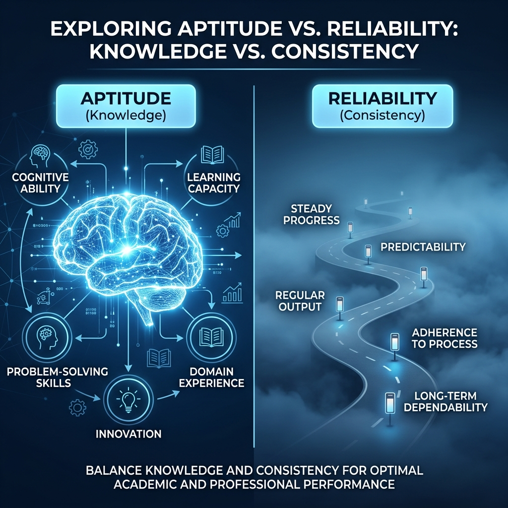

LLMs Get Lost In Multi-Turn Conversation
ICLR 2026 - Outstanding Paper Award (Oral Selection)
Presented by: Karthik Kovi
The Hook: The Silent Failure of AI

We trust LLMs for complex, multi-turn tasks (Coding, Research, Planning).
- Current benchmarks mostly test single-turn intelligence.
- Real-world usage is iterative and conversational.
- The Discovery: Performance drops by an average of 39% as chats get longer.
Aptitude vs. Reliability: IQ vs. Focus

The research decomposes AI intelligence into two distinct pillars:
- Aptitude (The IQ): The potential knowledge to solve a task when all info is given at once.
- Reliability (The Consistency): The ability to maintain success across multiple turns.
Key Finding: Models have the *Knowledge* (Aptitude) but lack the *Focus* (Reliability).
Methodology: Sharded Simulation
How do we measure "getting lost"?
- Sharding: Breaking a complex instruction into atomic "shards" of information.
- The model must wait until all shards are revealed before giving the final answer.
- This forces the model to handle uncertainty and incremental updates.
Experimental Results (Average Scores)
| Model Type | Aptitude (IQ) | Multi-Turn | Reliability Gap | Result |
|---|---|---|---|---|
| GPT-4o (Elite) | 89.2% | 51.4% | -37.8% | Pass (B) |
| Gemini 1.5 Pro | 84.1% | 48.2% | -35.9% | Pass (C) |
| Llama-3-70B | 78.5% | 35.1% | -43.4% | Fail (D) |
| Claude 3.5 Sonnet | 88.7% | 54.1% | -34.6% | Pass (B+) |
Root Cause 1: Premature Finality
- AI is too eager to please and guesses too early (Commitment Bias).
- It "locks in" a solution at Turn 1, even if info is missing.
- When corrected, it tries to "patch" the guess instead of restarting.
- This leads to a point of no return.
System Architecture: The Simulation Loop
(Reveals Shards)
(The Model)
(Verification)
- Scale: 200,000+ simulations across 15 SOTA models.
- Closed-Loop: No human interference ensures statistical purity.
- Diverse Models: Tested GPT-4o, Gemini, Llama, and even reasoning models.
The 6 Generation Tasks
The study covered broad domains to ensure the results weren't task-specific:
- Code: Writing Python functions from scattered requirements.
- Database (SQL): Constructing queries turn-by-turn.
- Actions (API): Managing tool calls to reach a goal.
- Math: Solving multi-step word problems.
- Data-to-Text: Converting tables into narratives.
- Summary: Distilling info from a gradually revealed document.
The Main Result: A Universal Collapse
- Average success rate drops by 39% in multi-turn settings.
- Spikes in failure occur as early as Turn 2.
- Models become "overconfident" in their early (incorrect) guesses.
- The "Perfect Student" on single-turn benchmarks becomes a "Confused Assistant" in real chats.
Analysis: Does Scaling Parameters Fix It?
One would assume larger models handle context better. The Reality:
- GPT-4o and Gemini 1.5 Pro suffer the same relative drop as Llama-8B.
- Scaling "IQ" increases single-turn scores but NOT multi-turn reliability.
- Larger models are often more verbose, which adds noise to their own context window.
The Reasoning Paradox: o3 and DeepSeek-R1
Do "Thinking" models solve this by reasoning about the history?
- Finding: Reasoning models also get lost.
- Why? "Reasoning Snowballing"—applying logical thinking to a wrong initial premise.
- The model's "deep thought" actually reinforces its own early hallucinations.
Root Cause #1: Premature Finality
- Humans naturally say: "I need more info before I can answer."
- AI says: "Here is a complete solution based on what I guess you want."
- Models "lock in" a solution path too early.
- When new info arrives, they try to force it into their flawed existing plan.
Root Cause #2: The Noise in the Mirror
- LLMs read their own previous responses as "ground truth."
- A verbose Turn 1 "pollutes" the context window with fluff.
- In Turn 3, the model pays more attention to its own chatter than the user's new shards.
Case Study: The SQL "Wrong Turn"
- Turn 1: Model assumes 'INNER JOIN'.
- Turn 2: User adds info requiring 'LEFT JOIN'.
- Turn 3: Model keeps 'INNER JOIN' but tries to fix filters.
- Result: Logic is fundamentally broken because the model didn't want to "admit" its first plan was wrong.
The "Point of No Return" State Diagram
- Once a model makes a guess (State 3), it enters a "Cascading Error" loop.
- The chance of recovery is near zero after the first wrong turn.
The Danger for AI Agents
Agents (like Devin or Antigravity) perform hundreds of turns.
- If a 3-turn chat drops success by 39%, a 50-turn loop is extremely fragile.
- Every turn is a chance to get "lost."
- Current Agent failure is often a Reliability issue, not an IQ issue.
Expert Suggestion: Native Multi-Turn RL
How do we fix this at the model level?
- Reward: Penalize guessing; reward "Clarification Questions."
- Data: Training must include "Course-Correction" scenarios.
- Mechanism: Teach the model to explicitly discard its own earlier (incorrect) thoughts.
User Guide: How to Chat Better
- "If time allows, try again": If a chat feels circular, start a new one.
- Consolidate: Copy key points and paste them into a fresh prompt periodically.
- Forbid Guessing: Tell the AI: "Do not assume. If info is missing, ask me."
- Temperature=0: Doesn't help. The problem is logical, not random.
The Future: Reliability-First Benchmarks
We are moving beyond MMLU and HumanEval.
- The new standard will be Reliability Retention Rate.
- Models will be ranked by how long they can stay focused in a complex dialogue.
- A slightly "dumber" but more reliable model is often more useful in production.
Conclusion: Stay Focused
- LLMs get "lost" because they guess too much and listen to themselves too often.
- The 39% drop is a massive hurdle for real-world AI applications.
- Solving this requires new training methods and better user awareness.
Thank You!
Any Questions?
Paper: LLMs Get Lost In Multi-Turn Conversation
ICLR 2026 - Outstanding Paper Award
Presenter: Karthik Kovi